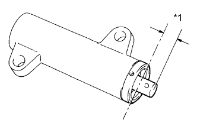

ПРИВОДНОЙ РЕМЕНЬ ГАЗОРАСПРЕДЕЛЕНИЯ > ПРОВЕРКА |
| 1. ПРОВЕРЬТЕ ПРИВОДНОЙ РЕМЕНЬ ГАЗОРАСПРЕДЕЛЕНИЯ |
 |
| *1 | НЕПРАВИЛЬНО |
| *2 | МАСЛО |
| *3 | ОХЛАЖДАЮЩАЯ ЖИДКОСТЬ |
Осмотрите приводной ремень газораспределения.
При наличии дефектов выполните следующие операции.
При наличии преждевременного расслаивания:
Проверьте правильность установки.
Проверьте отсутствие повреждений и правильное положение прокладки крышки ремня газораспределения.
Если какие-либо зубья ремня повреждены или потрескались, проверьте, не заблокирован ли распредвал.
При наличии значительного износа или трещин на поверхности ремня проверьте, нет ли зазубрин на боковой поверхности замка опорного шкива или насоса системы охлаждения.
Если следы износа или повреждений имеются только с одной стороны ремня, проверьте направляющую ремня и центровку всех шкивов.
При наличии существенного износа зубьев ремня проверьте, нет ли повреждений крышки ремня газораспределения, правильно ли установлена прокладка, и нет ли посторонних материалов на зубьях шкива.
При необходимости замените приводной ремень газораспределения.
| 2. ПРОВЕРЬТЕ ОПОРНЫЙ РОЛИК ПРИВОДНОГО РЕМНЯ ГАЗОРАСПРЕДЕЛЕНИЯ № 1 |
Проверьте, плавно ли вращается опорный ролик рукой.
Осмотрите место установки уплотнения опорного ролика и проверьте, нет ли там утечек смазки.
| 3. ПРОВЕРЬТЕ НАТЯЖИТЕЛЬ ПРИВОДНОГО РЕМНЯ ГАЗОРАСПРЕДЕЛЕНИЯ № 1 В СБОРЕ |
Осмотрите место установки уплотнения натяжителя ремня и проверьте, нет ли утечек масла.
При обнаружении утечки замените натяжитель ремня.
 |
Удерживайте натяжитель обеими руками, как показано на рисунке. С усилием вставьте толкатель и убедитесь, что он не перемещается.
Если толкатель перемещается, замените натяжитель ремня.
|  |
Измерьте выступание толкателя относительно кожуха.
| *1 | Выступание |